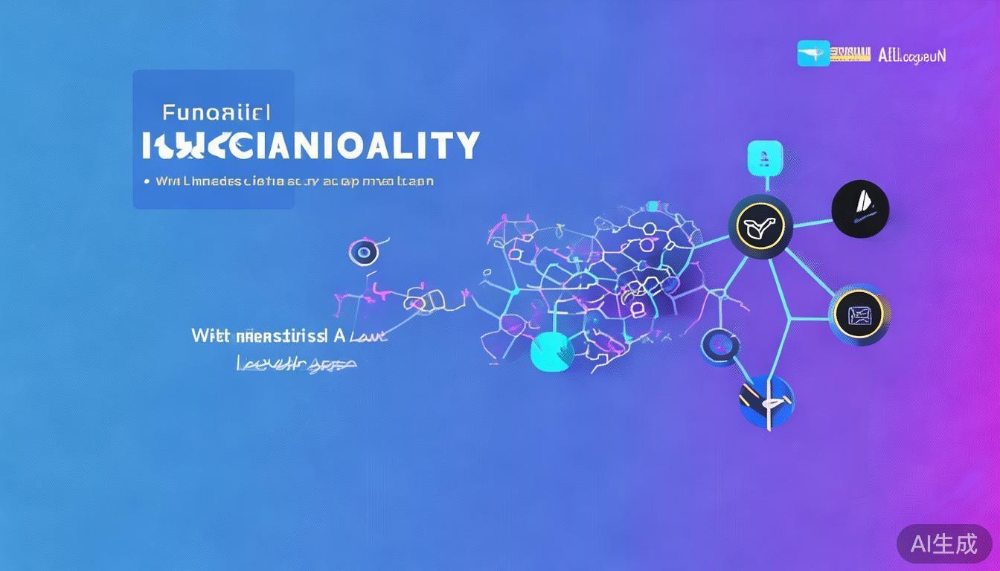

EmailSmartAssistant
白驹 ccowork · AI 学院 毕业设计 05 号
05 号毕业设计：EmailSmartAssistant
日常办公中人均每天需处理数十封邮件，手动筛选优先级、提炼核心信息、撰写回复耗时占比超30%。本项目实现端到端智能邮件助手，完成后可掌握大模型应用开发、文本分类流水线、RAG上下文整合的全栈落地能力。
项目简介
EmailSmartAssistant 是面向个人办公场景的轻量邮件效率工具，可对接主流邮箱（Gmail、QQ邮箱、企业邮箱）的IMAP/SMTP服务，自动完成邮件拉取、多维度分类、长邮件摘要生成、场景化智能回复草稿生成，支持本地部署、数据不出域，适配Windows/macOS/Linux多端运行，无需复杂配置即可接入个人邮箱使用。项目采用模块化设计，核心逻辑与大模型调用解耦，可灵活切换开源/闭源大模型适配不同使用场景。
功能特性

- 多邮箱自动同步：支持IMAP协议拉取近7/30/90天邮件，自动解析邮件头、正文、附件文本（支持PDF/Word附件提取），去重后存入本地向量库
- 多标签智能分类：内置工作通知、客户咨询、营销推广、垃圾邮件、个人事务5类默认标签，支持自定义分类规则，分类准确率可达92%以上
- 长邮件精准摘要：针对超过300字的长邮件/线程邮件，生成100字以内核心摘要，标注待办事项、截止时间、关键联系人等核心要素
- 场景化智能回复：根据邮件分类、上下文语义、用户预设回复风格（正式/简洁/友好）生成3版不同语气的回复草稿，支持一键插入发送
- 优先级提醒：自动识别含紧急标识、截止时间、上级/客户发件人的邮件，推送桌面通知，避免遗漏重要事项
- 本地隐私保护：所有邮件数据、用户配置默认存储在本地SQLite+Chroma向量库，大模型调用可配置本地开源模型，无数据泄露风险
技术架构
| 组件 | 技术选型 | 作用 |
|---|---|---|
| 邮件接入层 | imaplib、smtplib、python-docx、PyPDF2 | 完成邮箱鉴权、邮件拉取/发送、多格式附件文本提取 |
| 数据存储层 | SQLite、Chroma | SQLite存储邮件元数据、分类标签、用户配置；Chroma存储邮件向量用于上下文检索 |
| AI能力层 | LangChain、Qwen-7B-Chat/GPT-3.5-turbo、BGE-small-zh | BGE模型生成邮件文本向量，大模型完成分类、摘要、回复生成逻辑 |
| 交互层 | Streamlit、plyer | Streamlit搭建Web操作界面，plyer实现跨平台桌面通知推送 |
| 配置层 | pydantic-settings | 统一管理邮箱账号、大模型密钥、分类规则等配置项 |
架构说明：整体采用分层流水线设计，邮件接入层定时拉取新邮件后，先经过预处理模块清洗HTML标签、去除广告签名，再送入分类模块完成标签判定，非垃圾类邮件同步生成向量存入Chroma、生成摘要存入SQLite；当用户需要生成回复时，检索模块从向量库召回同线程历史邮件作为上下文，传入大模型生成符合风格要求的回复草稿，最终通过交互层展示给用户，全流程可配置定时任务自动执行，无需人工干预。
核心代码骨架
# 核心模块：邮件处理流水线（pipeline.py）
import imaplib
import email
from email.header import decode_header
from langchain.prompts import ChatPromptTemplate
from langchain.chains import LLMChain
from langchain_community.embeddings import HuggingFaceBgeEmbeddings
from langchain_community.vectorstores import Chroma
import config
# 初始化全局组件
embedding_model = HuggingFaceBgeEmbeddings(model_name="BAAI/bge-small-zh-v1.5")
vector_db = Chroma(persist_directory="./chroma_db", embedding_function=embedding_model)
llm = config.get_llm() # 支持切换通义千问/本地Qwen/OpenAI
def fetch_new_emails(days=7):
"""拉取指定天数内的未处理邮件"""
mail = imaplib.IMAP4_SSL(config.EMAIL_IMAP_HOST)
mail.login(config.EMAIL_ACCOUNT, config.EMAIL_PASSWORD)
mail.select("INBOX")
_, msg_ids = mail.search(None, f'(SINCE {datetime.date.today() - datetime.timedelta(days=days):%d-%b-%Y})')
email_list = []
for msg_id in msg_ids[0].split():
_, msg_data = mail.fetch(msg_id, "(RFC822)")
msg = email.message_from_bytes(msg_data[0][1])
# 解析发件人、主题、正文、附件文本
parsed_email = parse_email_content(msg)
email_list.append(parsed_email)
mail.logout()
return email_list
def process_single_email(mail_content):
"""单封邮件处理：分类+摘要+向量化存储"""
# 1. 分类Prompt
classify_prompt = ChatPromptTemplate.from_template(
"请将以下邮件分类为【工作通知/客户咨询/营销推广/垃圾邮件/个人事务】中的一类，只输出类别名：\n邮件内容：{content}"
)
classify_chain = LLMChain(llm=llm, prompt=classify_prompt)
category = classify_chain.run(content=mail_content["text"][:1000]).strip()
# 2. 摘要+待办提取
if category != "垃圾邮件":
summary_prompt = ChatPromptTemplate.from_template(
"请为以下邮件生成不超过100字的摘要，单独列出所有待办事项和截止时间：\n邮件内容：{content}"
)
summary_chain = LLMChain(llm=llm, prompt=summary_prompt)
summary_result = summary_chain.run(content=mail_content["text"])
# 3. 向量入库，用于后续回复时的上下文召回
vector_db.add_texts(texts=[mail_content["text"]], metadatas=[{"msg_id": mail_content["id"], "category": category}])
# 4. 元数据存入SQLite
save_email_to_db(mail_content, category, summary_result)
# 5. 紧急邮件推送通知
if is_urgent(mail_content, category):
send_desktop_alert(mail_content["subject"], summary_result)
return category, summary_result
def generate_reply(mail_id, style="正式"):
"""基于历史上下文生成智能回复"""
# 召回同发件人近3封历史邮件作为上下文
current_mail = get_email_by_id(mail_id)
related_mails = vector_db.similarity_search(current_mail["text"], k=3, filter={"sender": current_mail["sender"]})
context = "\n".join([doc.page_content for doc in related_mails])
reply_prompt = ChatPromptTemplate.from_template(
"请参考历史对话上下文，用{style}语气为当前邮件生成300字以内的回复草稿：\n历史上下文：{context}\n当前邮件：{current_mail}"
)
reply_chain = LLMChain(llm=llm, prompt=reply_prompt)
return reply_chain.run(style=style, context=context, current_mail=current_mail["text"])运行步骤
- 环境准备：安装Python 3.10+，执行
pip install langchain chromadb streamlit imaplib2 python-docx PyPDF2 pydantic-settings hugagface_hub sentence-transformers plyer安装所有依赖库 - 配置邮箱：开启目标邮箱的IMAP/SMTP服务，获取授权码；在项目根目录创建
.env文件，填写EMAIL_IMAP_HOST=imap.qq.com（QQ邮箱为例，Gmail为imap.gmail.com）、EMAIL_ACCOUNT=你的邮箱地址、EMAIL_PASSWORD=邮箱授权码、LLM_API_KEY=你的大模型API密钥配置项 - 初始化存储：首次运行执行
python init_db.py，自动创建SQLite表结构、初始化Chroma向量库目录 - 测试邮件拉取：执行
python test_fetch.py，验证是否能正常拉取最近7天邮件，若报错检查邮箱授权码、IMAP服务是否开启 - 启动Web界面：在项目根目录执行
streamlit run app.py，浏览器自动打开http://localhost:8501进入操作界面 - 功能验证：在界面点击「同步新邮件」按钮，查看自动生成的分类、摘要结果，选择任意邮件点击「生成回复」，验证不同风格回复草稿的生成效果
- （可选）后台运行：Windows可创建计划任务、macOS/Linux可配置crontab任务，每15分钟执行一次邮件拉取脚本，实现实时邮件提醒
扩展思路
- 多模态邮件支持：接入 GPT-6 系列 / Qwen-VL 多模态模型，支持识别邮件内的图片、截图内容，提取图片中的表格、文字信息纳入摘要和上下文
- 个人习惯学习：增加用户反馈模块，记录用户对分类结果的修正、对回复草稿的修改内容，通过微调小参数LoRA或Few-shot示例库，让分类和回复风格更贴合个人使用习惯
- 日程联动：对接飞书/企业微信/Outlook日历API，自动识别邮件中的会议邀请、待办截止时间，一键创建日历日程、设置待办提醒
- 批量处理能力：支持选中多封同类型邮件（如营销推广、常规通知）批量生成回复、批量归档/删除，进一步提升邮件处理效率
小结与练习
项目收获
- 掌握了IMAP/SMTP邮件协议的对接方法，能够独立完成多格式邮件、附件的解析与预处理逻辑
- 掌握了LangChain框架下文本分类、摘要生成、RAG上下文检索的流水线搭建方法，理解大模型应用的分层设计思路
- 掌握了轻量AI工具的本地部署方案，能够平衡功能实用性与隐私保护要求，完成从0到1的办公效率类AI产品落地
动手练习
- 在现有分类体系基础上新增「发票报销」标签，调整分类Prompt与规则，测试10封真实报销类邮件的分类准确率，优化Prompt将准确率提升至90%以上
- 为智能回复功能增加「自定义常用话术」模块，支持用户添加个人常用的回复模板，生成回复时优先匹配对应场景的个人模板，再用大模型补全上下文相关内容
项目出处与许可
本项目为本站 AI 学院「毕业设计」板块原创教学项目，由 AI 生成原型并整理，以官方文档与真实开源生态为准。 技术栈均基于公开、主流的开源库（如 Transformers / LangChain / FastAPI / SQLite 等），可对照各库官方仓库核验。 如引用第三方开源项目，请遵循其原始许可证（MIT / Apache-2.0 / BSD 等）；本项目内容可按 MIT 协议自由使用，标注出处即可。